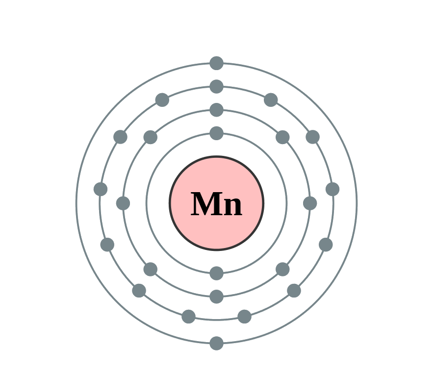

←
→
Manganese is a chemical element with symbol Mn and atomic number 25. It is not found as a free element in nature; it is often found in minerals in combination with iron. Manganese is a metal with important industrial metal alloy uses, particularly in stainless steels.
Historically, manganese is named for pyrolusite and other black minerals from the region of Magnesia in Greece, which also gave its name to magnesium and the iron ore magnetite. By the mid-18th century, Swedish-German chemist Carl Wilhelm Scheele had used pyrolusite to produce chlorine. Scheele and others were aware that pyrolusite (now known to be manganese dioxide) contained a new element, but they were unable to isolate it. Johan Gottlieb Gahn was the first to isolate an impure sample of manganese metal in 1774, which he did by reducing the dioxide with carbon.
Manganese phosphating is used for rust and corrosion prevention on steel. Ionized manganese is used industrially as pigments of various colors, which depend on the oxidation state of the ions. The permanganates of alkali and alkaline earth metals are powerful oxidizers. Manganese dioxide is used as the cathode (electron acceptor) material in zinc-carbon and alkaline batteries.
In biology, manganese(II) ions function as cofactors for a large variety of enzymes with many functions. Manganese enzymes are particularly essential in detoxification of superoxide free radicals in organisms that must deal with elemental oxygen. Manganese also functions in the oxygen-evolving complex of photosynthetic plants. While the element is a required trace mineral for all known living organisms, it also acts as a neurotoxin in larger amounts. Especially through inhalation, it can cause manganism, a condition in mammals leading to neurological damage that is sometimes irreversible.